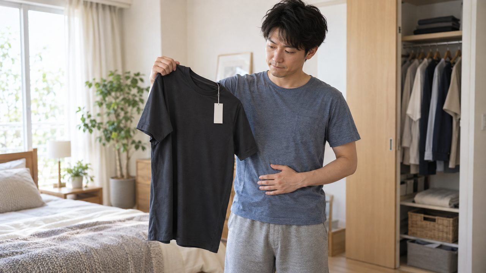

C10:00–0:04
指先を気にしている女性（新規生成）
テロップ
気になっているのに、後回しにしている指先。
ネイルサロン×パーソナルジム／東京都多摩市豊ヶ丘1-3-18
v8では「指先を後回しにしている女性（ネイル客）」「始めたいのに踏み出せていない男性（ジム客）」それぞれのペルソナ本人カットを新規生成し、対象物カットの直前に追加しました。「誰の話か」を先に見せてから悩みを具体化することで、v7よりストーリー性を強めています。後半は「実は同じ場所にある」という1つの解決策に合流させる構成は維持しています。
実写7枚はクライアント様からお預かりした素材（無改変）、ペルソナ2枚（C1・C4）は今回新規にGPT Imageで生成した架空の人物です。実在の人物・タレントを模したものではありません。表示されているテロップが、現時点での本番文言案です。
指先を気にしている女性（新規生成）
気になっているのに、後回しにしている指先。
 C20:04–0:08
C20:04–0:08ネイルアートのマクロ
特別な予定がなくても、整えていい。
 C30:08–0:12
C30:08–0:12施術ベッド（引き・自然光）
近所で、ちゃんとしたネイルサロンを探している。

C40:12–0:16トレーニングウェアを手に踏み出せない男性（新規生成）
始めたい、と思ったまま何ヶ月。
 C50:16–0:20
C50:16–0:20ダンベル低アングル（動的）
一人だと続かない、が一番の壁。
C60:20–0:24ダンベル低アングル（動的・別クロップ想定）
誰かと一緒なら、続けられるかもしれない。
 C70:24–0:28
C70:24–0:28外観①（ドア越しにデスク＋ダンベルラック）
実はこの2つ、同じ場所にあります。
 C80:28–0:32
C80:28–0:32外観②（ドア越しにベッド＋ダンベルラック）
ネイルサロンと、パーソナルジムが同居する店。
 C90:32–0:37
C90:32–0:37ネイルデスクワイド
近所に、ちゃんとしたネイルサロンがある。
 C100:37–0:42
C100:37–0:42夫婦ツーショット
営むのは、性格も得意なことも正反対な夫婦。
C110:42–0:46エンドカード（外観再使用）
ORDOgni（オルドーニ）／東京都多摩市豊ヶ丘1-3-18／ネイル×パーソナルジム／ご来店・お問い合わせ（CTA仮）
実写7枚はクライアント様からお預かりした店舗素材で、無改変で使用しています。ダンベル低アングル（C5/C6）と外観②（C8/C11）はそれぞれ同じ写真を2カットで再使用しています。
C1（ネイル客ペルソナ）・C4（ジム客ペルソナ）は今回新規にGPT Imageで生成した画像です。実在の人物・タレントを模したものではなく、AIが独自に生成した架空の人物です。文字・ロゴは焼き込んでおらず、既存の実写7枚と同じ自然光・白/木目基調のトーンに合わせています。
v7までは顧客ご本人を映さず対象物カットのみで悩みを表現していましたが、v8では「誰の話か」を先に見せてから対象物で悩みを具体化する2段構成にし、ストーリー性を強めています。
鈴木さんより共有いただいた実在の広告動画です（生存確認済み）。構成をこの動画にべったり寄せたものではなく、あくまで着想のきっかけ・軽い参考としての位置づけです。